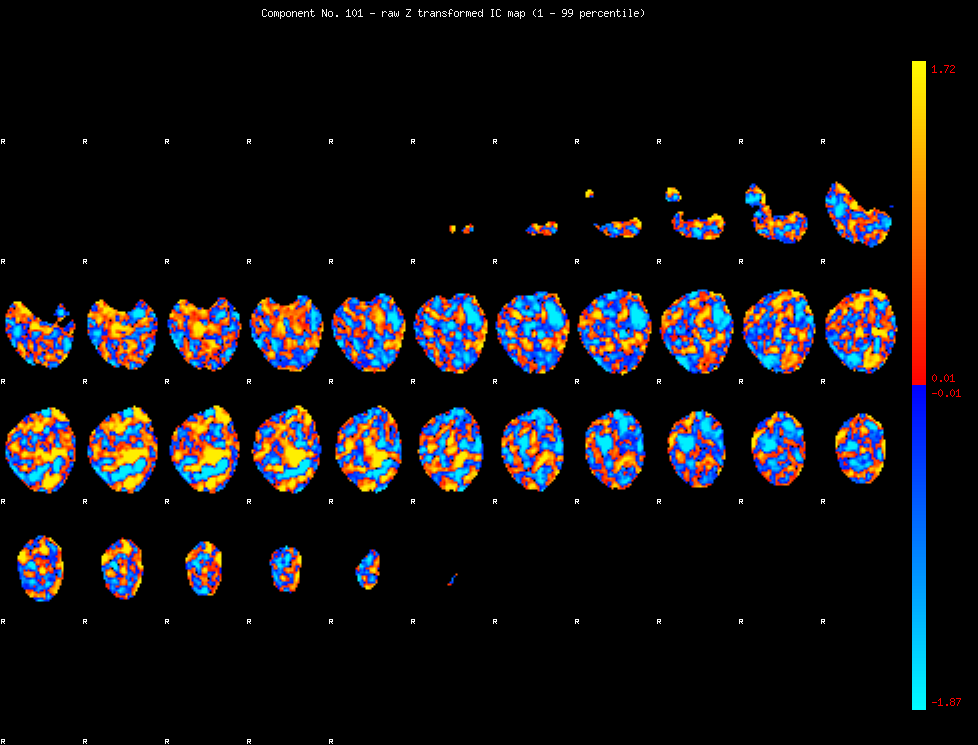

Component 101 Mixture Model fit


IC_101 Mixture Model fit
Means : -0.000000 2.949123 -2.577112
Vars : 1.000000 2.801802 0.895713
Prop. : 0.945010 0.019170 0.035820
This page produced automatically by MELODIC Version 3.13 - a part of FSL - FMRIB Software Library.